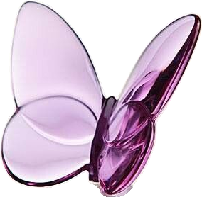

My blog
Writing HTML can get exhausting. And I don't know everything so like... yeah.
Writing HTML can get exhausting. And I don't know everything so like... yeah.
The most ambitious project Gabriel and I are working on currently, Terminus is a game about apocalypses, time loops and what it means to be human.

The game itself is still in development (obvi), and some story/design elements may change. I also don't want to disclose too much about Terminus due to some... unfortunate stuff behind the scenes.
If you're curious about the general vibes of the games and of the main characters, you can check out the Pinterest board linked.
[Click the butterfly: 